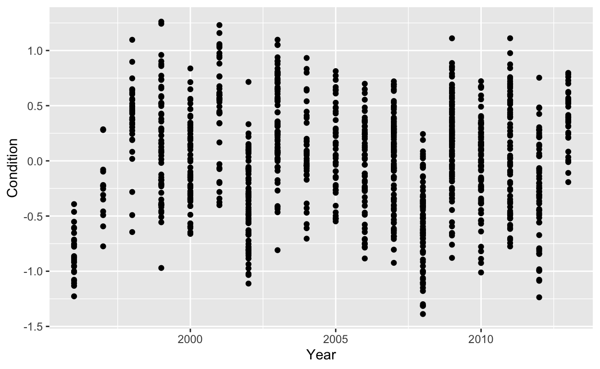
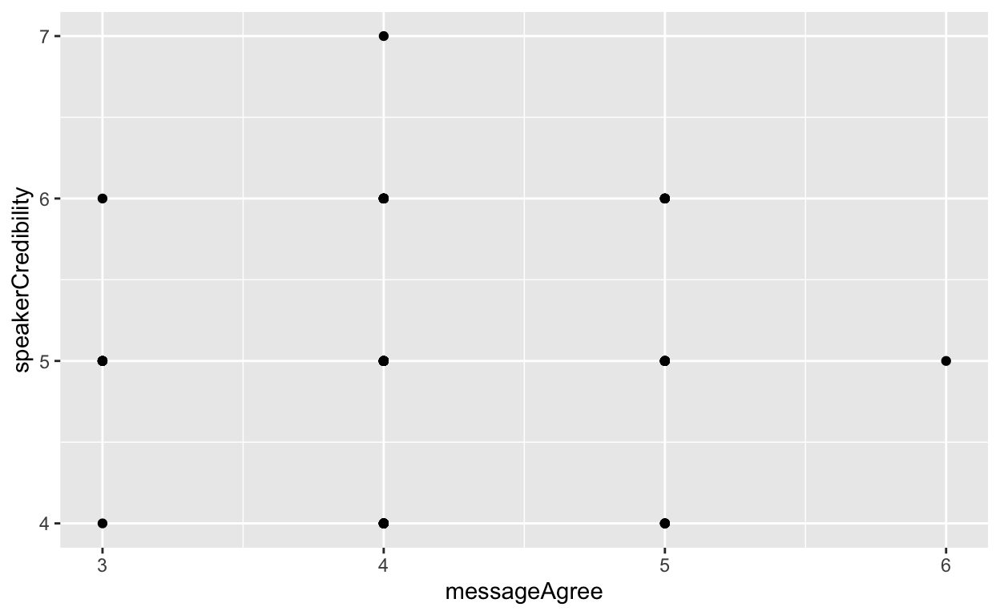
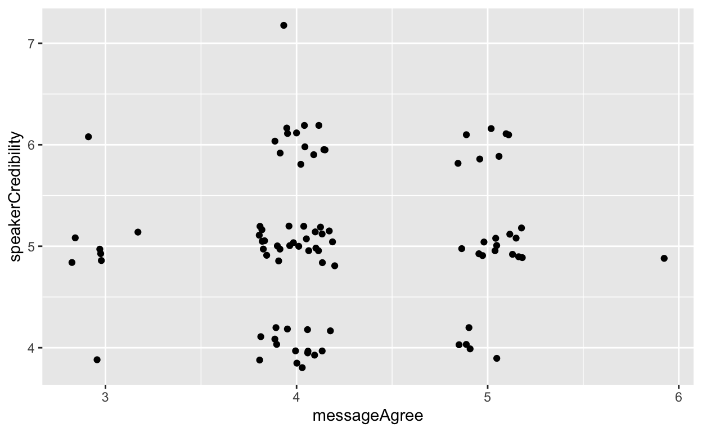
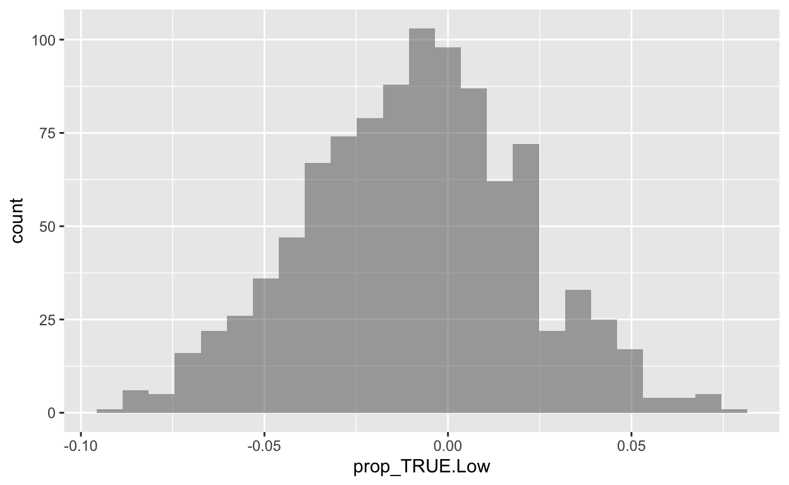

Often, the most challenging part of generating a bootstrap CI is figuring out how to compute a sample statistic that answers the question of interest.
We will use a few example datasets to practice computing sample statistics and bootstrap CIs.
A paper by Claire Saraux and colleagues showed that “banding of free-ranging king penguins (Aptenodytes patagonicus) impairs both survival and reproduction, ultimately affecting population growth rate.” To explore their results, we will use the dataset penguins with variables:
tag.type (“band” or “no band”) – whether or not a penguin had a metal flipper band (photo)survived (“died” or “lived”) – whether or not the penguin died during the 10-year study periodforaging.duration – mean duration of foraging trips (in days) by the penguin during the study periodNote: the dataset is simulated based on summary statistics reported in the paper.
Cory Scherer and Brad Sagarin published a paper with abstract:
This experiment examined the effects of judicious swearing on persuasion in a pro‐attitudinal speech. Participants listened to one of three versions of a speech about lowering tuition that manipulated where the word “damn” appeared (beginning, end, or nowhere). The results showed that obscenity at the beginning or end of the speech significantly increased the persuasiveness of the speech and the perceived intensity of the speaker. Obscenity had no effect on speaker credibility.
The obscene data are pre-loaded for you in this tutorial, and also available at http://www.calvin.edu/~sld33/data/obscenity.csv and includes useful variables:
swearing When in his speech the speaker swore (“beginning”, “end”, or “none”)messageAgree Viewer ratings of whether they agreed with the speaker, on a scale of 1 to 7 (7 is more agreement)speakerIntensity Viewer ratings of how intense the speaker was, on a scale of 1 to 7 with 7 being most intensespeakerCredibility Viewer ratings of how credible the speaker was, on a scale of 1 to 7 with 7 being most credibleNote: the dataset is simulated based on summary statistics reported in the paper. ### Rain-on-Snowy Reindeer
Mathieu Douhard and colleagues studied the effects of weather on reproductive success in reindeer. For reindeer, frequent rain-on-snow (ROS) is bad weather. The dataset reindeer (already loaded for you in this tutorial, or accessible at http://www.calvin.edu/~sld33/data/reindeer.csv) includes variables:
YearROS (with frequent ROS indicating bad weather conditions for reindeer)Condition of reindeerPregnant or notA simple sample statistic that we’ve already seen and calculated many times is the sample mean. For example, we might want to find the average foraging trip duration of penguins in days:
mean(~foraging.duration, data=penguins)## [1] 12.119Find:
Condition of reindeer in the reindeer datasetspeakerIntensity score in the obscene datasetmean(~quantitative_variable, data=dataset_name)While the mean will be the simple sample statistic that we use most often, of course there are many other possibilities. For example, try:
median() to find the median Condition of reindeerIQR() to find the inter-quartile range of penguin foraging.durationssd() to find the standard deviation of speakerCredibility ratings from the obscene studyIf you are short on time feel free to skip ahead to the next main section (Means by Groups). If not, enjoy this section on correlation.
A sample statistic that we haven’t yet talked much about, but which you have probably heard of and worked with in previous classes, is the correlation coefficient. We use \(\rho\) (Greek letter rho) for the population correlation and \(r\) for the sample correlation between two quantitative variables. \(r\) ranges from -1 to 1 and measures the strength of the linear relationship between the variables, with 0 indicating no relationship, 1 a perfect linear relationship (one goes up and so does the other, by a set amount), and -1 a perfect linear relationship (one goes up and the other goes down, by a set amount).
R function cor() computes correlation coefficients. It takes a formula of the form y ~ x but notice - in this case the order (which variable is x and which is y) makes no difference to the result.
Since the correlation coefficient is only a useful metric for pairs of variables with a linear trend (or no trend), we should always check a scatter plot before computing it! (In fact, we should check a plot before computing any summary statistic, always, in any analysis. We’re being lazy in this tutorial to leave time to practice computing lots of stats.)
If you want some practice guessing correlation coefficients, try playing one of the games at:
It’s easy to compute correlation coefficients in R using function cor(), but we do have to remember to plot first. For example,
gf_point(Condition ~ Year, data=reindeer)
The correlation coefficient wouldn’t be a wise summary stat to use here, with a cyclic nonlinear trend!
gf_point(speakerCredibility ~ messageAgree, data=obscene)
Interesting - many points are overplotted, since there are only a few possible scores. How can we better see how many there are?
gf_jitter(speakerCredibility ~ messageAgree, data=obscene,
width=0.2, height=0.2)
And the correlation?
cor(speakerCredibility ~ messageAgree, data=obscene)## [1] 0.04637486cor(messageAgree ~ speakerCredibility, data=obscene)## [1] 0.04637486Try plotting, then finding a correlation coefficient for, another pair of variables from the obscene dataset.
Often, we don’t want to just estimate a mean; we want to compare the means for two or more groups to find out whether they are different. One way to do this is to find a CI for the difference in means, which starts with computing the sample means for all groups (and maybe also the difference(s) between them).
Again, we can use mean() to do this, and we have seen it several times before. We use commands of the form mean(~quantitative_variable | groups_variable, data=dataset_name). For example, to get the mean penguin foraging trip duration by survival status,
mean(~foraging.duration | survived, data=penguins)## died lived
## 12.16067 12.02941We can also use diff() to compute the difference in means:
diff(mean(~foraging.duration | survived, data=penguins))## lived
## -0.1312518Find means by groups (and differences between them) for:
penguin foraging.duration by tag.typemessageAgree), how intense they think he is (speakerIntensity), or how credible they think he is (speakerCredibility), depending on when and if he swears (swearing) (Note: I am using “he/him” for the speaker only because, in this experiment, the speaker was always a man.)reindeer body Condition by Year or by Pregnant status or by the amount of ROSWhat happened for the variables that were grouped into three or more categories, when you applied diff()? Did you pay attention and understand what happened? If not, review one of the relevant examples and see if you can figure it out…
For categorical variables, the main summary statistic we will use is the proportion in each category (or, to keep it simple, the proportion in one specific category).
We can use prop() to find the proportion of observations in a specific category. For these, we normally use logical operators == (is equal to) and != (is not equal to) to specify the values of the variable we are interested in.
For example, to find the proportion of observations in the obscene dataset that pertain to videos with no swearing, we need to find the cases where swearing has the value "none":
prop(~swearing == 'none', data=obscene)## prop_TRUE
## 0.3295455to find the proportion with swearing (either at the "beginning" or the "end"):
prop(~swearing != 'none', data=obscene)## prop_TRUE
## 0.6704545Use prop() to find the proportion:
penguins who survived (variable survived, value "lived")penguins who were banded (use head() or glimpse() to figure out the variable and value you need!)We can also use prop() to find the proportion of cases where a quantitative variable takes on a certain value. Here we may need to use logical operators >, <, >=, and <=. For example, what proportion of reindeer observations were collected in or after the year 2000?
prop(~Year >= 2000, data=reindeer)## prop_TRUE
## 0.8742857Your turn – what proportion of viewers gave a rating of 4 or more for speakerCredibility in the obscene experiment?
We have two ways to find proportions by groups. To find proportions in all combinations of values of two categorical variables, we can use tally() with input format = 'prop':
tally(survived ~ tag.type, data=penguins, format= 'prop')## tag.type
## survived band no band
## died 0.7365269 0.6349206
## lived 0.2634731 0.3650794To get just the proportion of interest for each group, we can use prop() – for example, if we were interested in penguin survival probabilities, it woudn’t really be necessary to compute both the proportion that lived and the proportion that died.
prop(~survived == 'lived' | tag.type, data=penguins)## prop_TRUE.band prop_TRUE.no band
## 0.2634731 0.3650794Find the proportion reindeer that were Pregnant by Year two ways – using tally(), and using prop().
We can find differences in proportions as we did for means, using diff(). It is simplest with output from prop(). For example, the difference in survival proportion for penguins with and without bands:
diff(prop(~survived == 'lived' | tag.type, data=penguins))## prop_TRUE.no band
## 0.1016063Alternatively, you can use tally, isolating the [rows, columns] you want to extract from the table with hard brackets. (Leaving either rows or columns blank means keep them all; : indicates a range, for example 1:3 means 1, 2 and 3.)
tally(~survived | tag.type, data=penguins, format='prop')## tag.type
## survived band no band
## died 0.7365269 0.6349206
## lived 0.2634731 0.3650794# lived is second row
tally(~survived | tag.type, data=penguins, format='prop')[2,]## band no band
## 0.2634731 0.3650794# diff()
diff( tally(~survived | tag.type, data=penguins, format='prop')[2,] )## no band
## 0.1016063Wow, 10% less survival with bands!!
Find the difference in proportion Pregnant reindeer depending on the amount of ROS.
That was a lot of code!
Don’t forget you can return to this tutorial anytime to view the examples.
There are also examples of these calculations on the class R reference site. (If there is something that should be there and isn’t, let Prof DR know.)
Whoa, that was a lot of sample statistics you just calculated. Wasn’t this supposed to be about practicing bootstrap CIs?
Well, once you have the sample stat calculation, the CI itself is pretty straightforward.
First, we always explore (plot and maybe also View()) the data, then compute the sample statistic of interest.
Next, we generate many bootstrap samples by resampling from the dataset.
For each one, we compute the sample stat.
The code to do this looks like:
name_of_boot_dist <- do(1000)* [stat]name_of_boot_dist is the name you want to assign to the results (this will be the name of the dataset where your bootstrap distribution is stored).do()s is the number of bootstrap samples to generate. 1,000 to 10,000 is usually enough and not too many.[stat] is the exact same code you used to compute your sample stat (whatever it was), except with data=dataset_name replaced by data=resample(dataset_name)It’s that easy!
Give it a try – generate a bootstrap distribution for the difference in proportion Pregnant reindeer by ROS occurrence.
name_of_boot_dist <- do(1000)* [stat]rein.boots <- do(1000)*diff(prop(...))rein.boots <- do(1000)*diff(prop(..., data=resample(reindeer)))rein.boots <- do(1000)*diff(prop(~Pregnant == 'Yes' | ROS, data= resample(reindeer)) )Once we have the bootstrap distribution, we should check out a histogram. In particular, we would like to know if the distribution is unimodal, symmetric and bell-shaped – if so, we can use the \(stat \pm 2SE\) method to compute a 95% CI.
rein.boots <- do(1000)*diff(prop(~Pregnant == 'Yes' | ROS, data= resample(reindeer)) )
head(rein.boots) # to get variable name - another option is: names(rein.boots) gf_histogram(~prop_TRUE.Low, data=rein.boots)
For 95% confidence, if the bootstrap distribution is approximately normal, we can use \(stat \pm 2SE\). A slick trick to add and subtract the \(2SE\) term in R is to multiply it by c(-1,1).
To make the calculation, we need:
rein.diff <- diff(prop(~Pregnant == 'Yes' | ROS, data= resample(reindeer)))
SE <- sd(~prop_TRUE.Low, data=rein.boots)
myCI <- rein.diff + c(-1,1)*2*SE
myCI## [1] -0.06263986 0.05748237We can also use cdata() to find the central 95% (or any other proportion) of the sampling distribution, and thus compute our CI. This is called the percentile method. For example:
cdata(~prop_TRUE.Low, data=rein.boots, p=0.95)## low hi central.p
## -0.07032712 0.05076320 0.95000000“In context” means “in the context of the scientific question we are trying to answer.” Here, our CI was (-0.0626399, 0.0574824) and we might say,
We are 95% confident that the true difference in proportion pregnant reindeer (Low ROS conditions minus High ROS conditions) is between -0.0626399 and 0.0574824.
If you have a sample stat that you are computing for each of more than two groups in the data, it may be of interest to have do() compute and store the means (or proportions, or whatever) for all the groups, and then compute the differences later on. This is a way to get CIs for differences between several pairs of variables, with one set of bootstrap samples.
For example, we can look at the obscene data and compare mean messageAgree scores by swearing. The example below only does 5 bootstrap samples, just to show you how it works – in a real analysis you would use many (1,000-10,000 or so).
obscene.boot <- do(5)*mean(~messageAgree | swearing, data=resample(obscene))
obscene.bootCool! It stored all three means for each bootstrap sample. Now, if we want differences, we can use mutate() to compute them and store them in the same dataset:
obscene.boot <- obscene.boot %>%
mutate(beg_minus_end = beginning - end)
obscene.bootTry it: write code to add a variable with the difference in mean agreement scores between “none” and “end”.
obscene.boot <- obscene.boot %>%
mutate(new_variable_name = old_variable1 - old_variable2)
obscene.bootobscene.boot <- obscene.boot %>%
mutate(none_minus_end = none - end)
obscene.bootNow you have all the pieces - try computing some confidence intervals for:
penguins who survived depending on tag.typepenguin foraging.duration by tag.type and/or by whether they survived.messageAgree), intensity (speakerIntensity), or credibility (speakerCredibility) depending on swearing used. (Note: you will have to find CIs for differences between pairs of values, unless you can come up with a sample stat that somehow measures the differences between more than two groups. Stay tuned for just that later in the course! For now, feel free to work with pairs.)You can work here in the tutorial (datasets reindeer, obscene and penguins are already loaded for you) or move to RStudio and save a Rmarkdown file.
#find sample stat
#generate boot dist
boot <- do(1000)* [sample stat with data=resample(dataset_name)]
head(boot)
#plot histogram of boot
gf_histogram(~variable, data=boot)
#compute CI
cdata(~variable, data=boot, p=0.95)